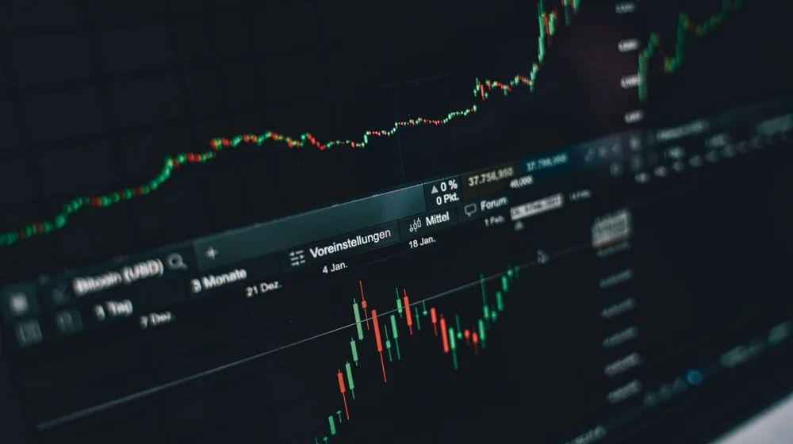

코스피 코스닥 차이 완벽 정리: 주식 초보라면 이것부터 구분하세요
사진: Rafael Minguet Delgado / Pexels (무료 이미지, 출처 표기)
주식 초보가 반드시 알아야 할 코스피와 코스닥의 핵심 차이

주식 투자를 막 시작했다면 '삼성전자는 코스피, 에코프로는 코스닥'이라는 말을 자주 들어보셨을 겁니다. 하지만 두 시장이 정확히 어떻게 다르고, 내 투자 성향에는 어디가 더 맞는지 제대로 아는 초보는 의외로 많지 않습니다. 한국거래소(KRX)에 상장된 기업들은 저마다의 기준에 따라 이 두 시장 중 한 곳에 속하게 됩니다.
쉽게 비유하자면 코스피는 이미 탄탄하게 자리를 잡은 '대기업들의 운동장'이고, 코스닥은 앞으로의 성장 가능성이 높은 '벤처·유망기업들의 운동장'입니다. 이 글을 통해 두 시장의 핵심 차이를 이해하고 나면, 주식 앱을 켰을 때 종목을 바라보는 눈이 완전히 달라질 것입니다.
코스피(KOSPI)란? 대기업 중심의 안정적인 시장
코스피(KOSPI, 종합주가지수)는 국내를 대표하는 메인 증권시장입니다. 상장 조건이 매우 까다롭기 때문에 우리가 이름을 들으면 누구나 아는 대기업이나 역사 깊은 중견기업들이 주로 포진해 있습니다.
매출액이 크고 안정적인 이익을 내는 기업들이 많아 주가 변동성이 코스닥에 비해 완만한 편입니다. 대표적인 기업으로 삼성전자, SK하이닉스, 현대자동차 등이 있으며, 비교적 안정적이고 장기적인 우상향 투자를 선호하는 초보 투자자에게 적합한 시장입니다.
코스닥(KOSDAQ)이란? 성장성과 기술력을 갖춘 벤처 시장
코스닥(KOSDAQ)은 미국의 나스닥(NASDAQ)을 모델로 삼아 만든 시장입니다. 코스피에 상장하기에는 아직 규모가 작지만, 뛰어난 기술력과 미래 성장성을 갖춘 IT, 바이오, 엔터테인먼트, 2차전지 등 유망 분야의 중소·벤처기업들이 주로 상장되어 있습니다.
코스피에 비해 상장 진입 장벽이 낮아 혁신적인 기업들이 빠르게 자금을 조달할 수 있는 통로가 됩니다. 주가 상승기에 높은 수익률을 기대할 수 있지만, 반대로 대외 변수나 업황에 따라 주가가 급등락하기 쉬우므로 상대적으로 위험성이 높다는 점을 염두에 두어야 합니다.
한눈에 비교하는 코스피 vs 코스닥 차이점
두 시장의 성격과 특징을 한눈에 쉽게 비교할 수 있도록 표로 정리했습니다.
초보 투자자를 위한 시장별 투자 접근법과 주의사항
처음 주식을 시작할 때는 내 자산 규모와 감당할 수 있는 손실 범위를 먼저 파악하는 것이 좋습니다. 원금 손실에 대한 불안감이 크고 마음 편한 투자를 원한다면 코스피의 시가총액 상위 우량주나 이들을 모아놓은 ETF(상장지수펀드)로 시작하는 것을 추천합니다.
반면 시장 트렌드에 민감하고 단기적인 주가 흐름을 타며 높은 수익을 노린다면 코스닥 기업에 관심을 가질 수 있습니다. 다만 코스닥 종목은 변동성이 매우 크기 때문에 기업의 재무제표와 분기별 매출 성장세를 더욱 꼼꼼하게 들여다보아야 낭패를 피할 수 있습니다.
각 시장의 구체적인 상장 규정이나 실시간 지수 변화는 한국거래소(KRX) 공식 홈페이지에서 확인할 수 있으며, 시장 상황에 따라 세부 제도가 변경될 수 있으므로 주기적으로 공식 채널의 안내를 확인하시는 것을 권장합니다.
🔗 이 글도 함께 보면 좋아요: 알고 마시면 더 맛있는 전통주 핵심 용어 5가지 완벽 정리
관련 추천 상품
이 포스팅은 쿠팡 파트너스 활동의 일환으로, 이에 따른 일정액의 수수료를 제공받습니다.
자주 묻는 질문(FAQ) (탭하면 펼쳐져요)
Q1. 코스피와 코스닥 중 어디에 투자하는 것이 더 안전한가요?
A. 일반적으로 코스피 시장에 상장된 기업들이 자본금 규모가 크고 안정적인 이익을 내는 대기업 위주이기 때문에 코스닥에 비해 변동성이 적고 상대적으로 안전한 편입니다.
Q2. 코스닥 기업이 코스피로 시장을 옮길 수도 있나요?
A. 네, 가능합니다. 이를 '이전 상장'이라고 합니다. 코스닥에서 성장한 기업이 매출과 자본금 등 코스피의 엄격한 상장 조건을 충족하게 되면 시장을 이전할 수 있으며, 대표적인 사례로 카카오, 셀트리온 등이 있습니다.